Instalación de R y RStudio
Santiago Gualchi
CC BY-NC-ND 4.0
El primer paso antes de escribir la primera línea de código es instalar el software necesario. Para empezar a usar R, necesitamos instalar:
- el intérprete de R (al que también llamamos R); y
- el entorno de desarrollo integrado (IDE) RStudio.
Instalación de R
- Dirigirse a https://www.r-project.org/.
- Hacer clic en CRAN en la barra lateral.
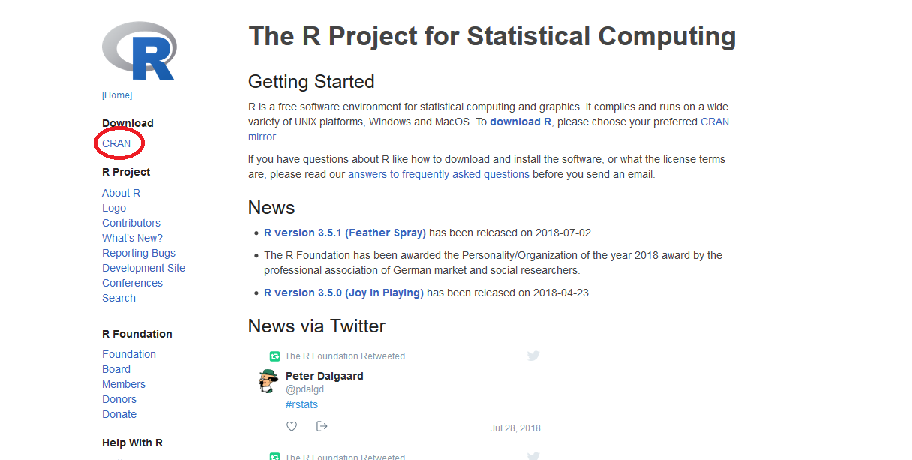 - Elegir el mirror 0-Cloud (este mirror selecciona automáticamente el mirror más cercano a tu ubicación).
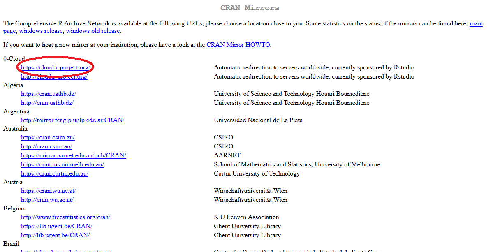
- Elegir la opción correspondiente a tu sistema operativo: Linux, Mac o Windows.
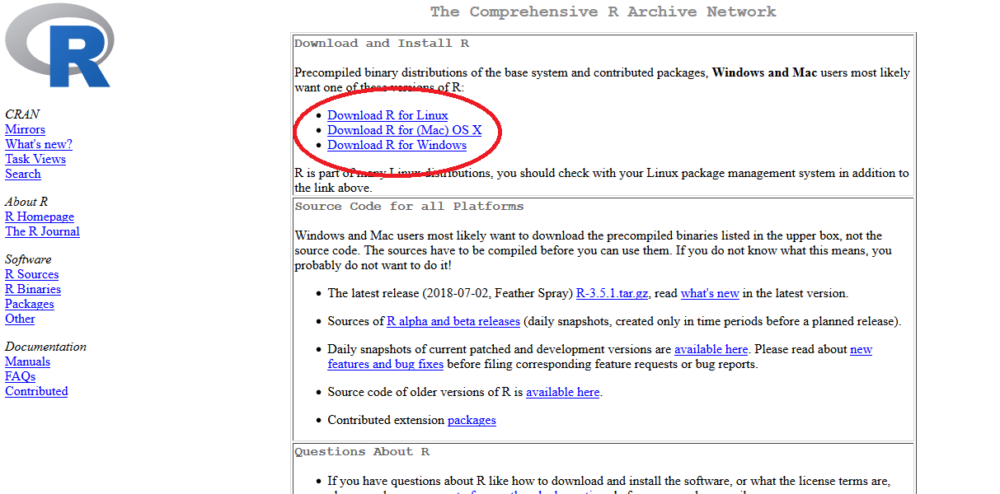
Instrucciones para la instalación en Windows.
- Hacer clic en Download R for Windows.
- Hacer clic en base.
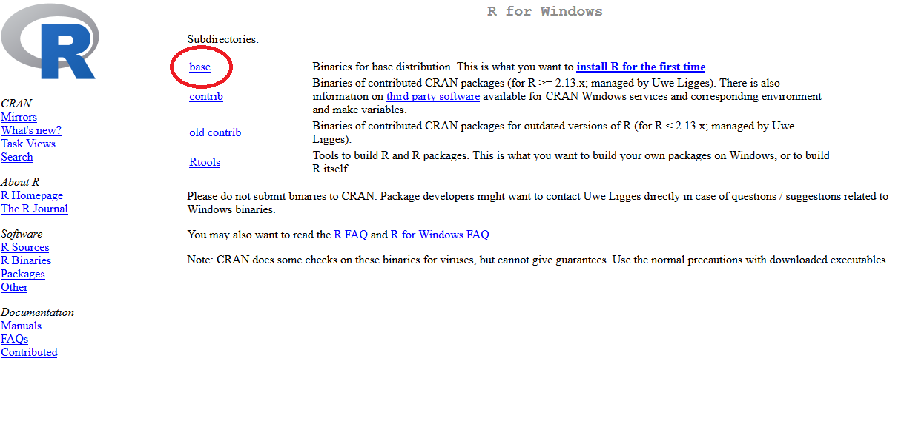 - Hacer clic en Download R x.x.x for Windows y descargar el instalador.
- Abrir el instalador y aceptar los permisos de administrador.
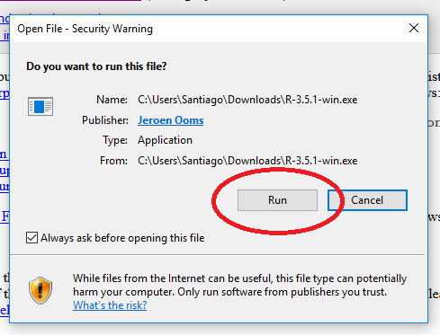 - Elegir el idioma preferido. Recomiendo instalar R (y, en general, cualquier herramienta de desarrollo) en inglés porque resulta más sencillo encontrar soporte en este idioma (principalmente para resolución de errores de sintaxis).
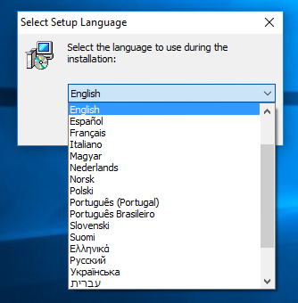 - Leer y aceptar los términos y condiciones de la GNU GPL.
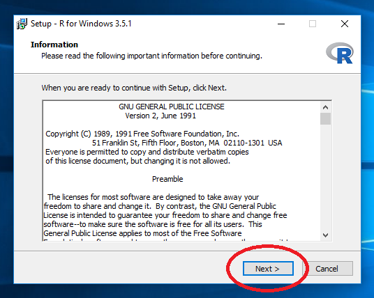 - Seleccionar la ubicación donde se desea instalar R. Recomiendo mantener la opción por defecto.
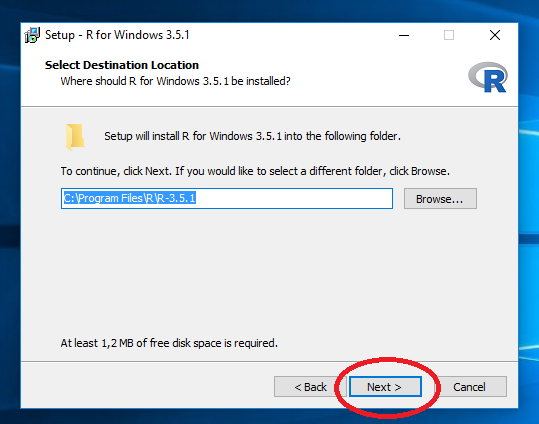 - Seleccionar los componentes que se desean instalar. La opción por defecto suele ser la óptima.
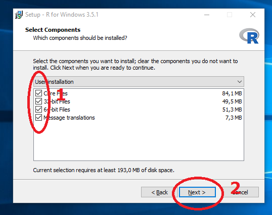 - Si bien customizar la instalación de programas suele evitarnos la instalación silenciosa de adware, en este caso el instalador de R quiere saber si queremos personalizar las opciones de arranque. Seleccionar No (accept defaults).
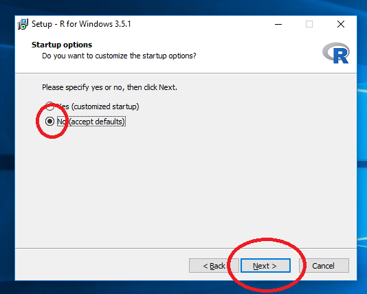 - Seleccionar la carpeta donde deseamos encontrar R en el menú inicio. Recomiendo mantener la opción por defecto.
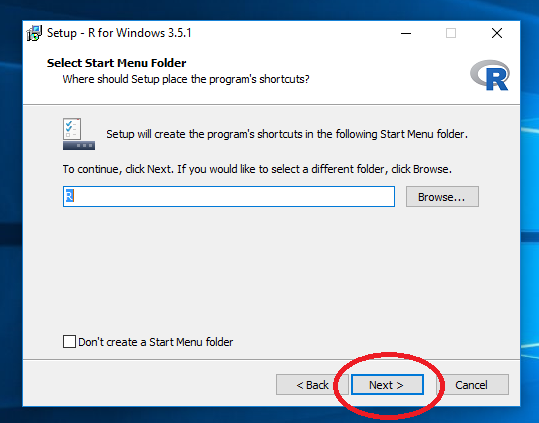 - Dejar las tareas adicionales con los valores por defecto.
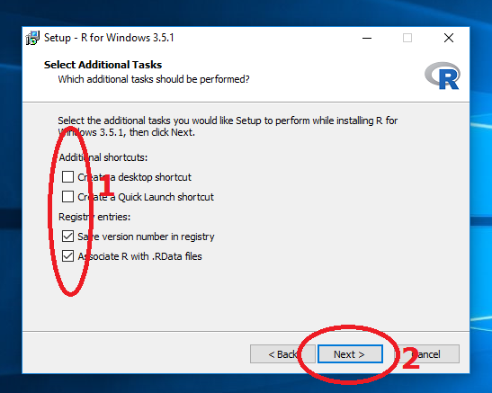 Esperar a que la instalación termine.
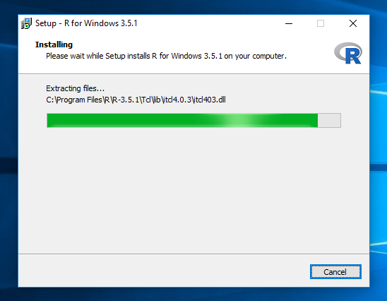¡Listo! R ya está instalado.
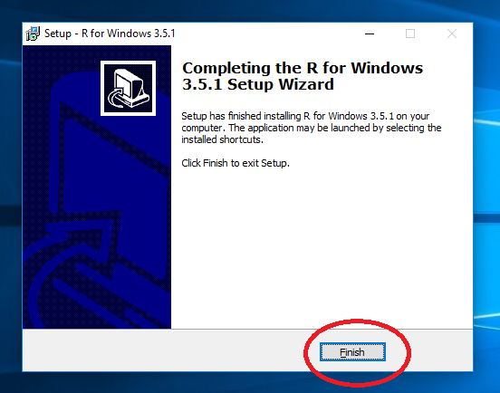
Instalación de RStudio
- Dirigirse a https://www.rstudio.com/.
- Desplegar el menú bajo Products y hacer clic en RStudio.
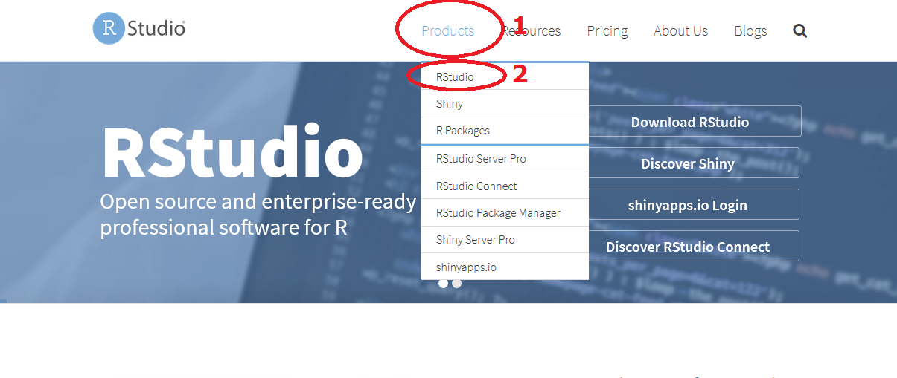 - Escrolear hacia abajo y elegir la opción Download RStudio Desktop.
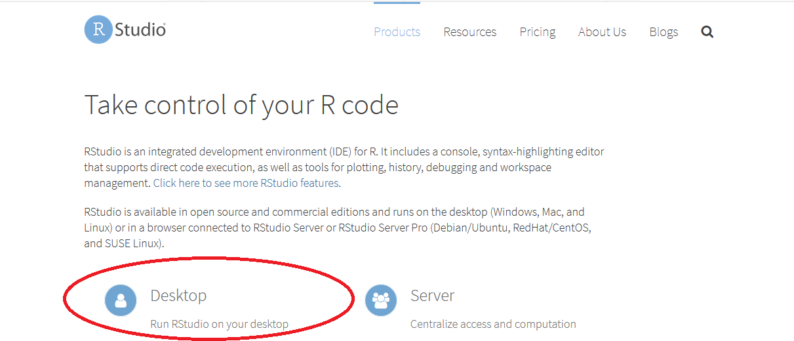
Instrucciones para la instalación en Windows.
- Escrolear hacia abajo, elegir RStudio x.x.xxx - Windows Vista 7/8/10 y descargar el instalador.
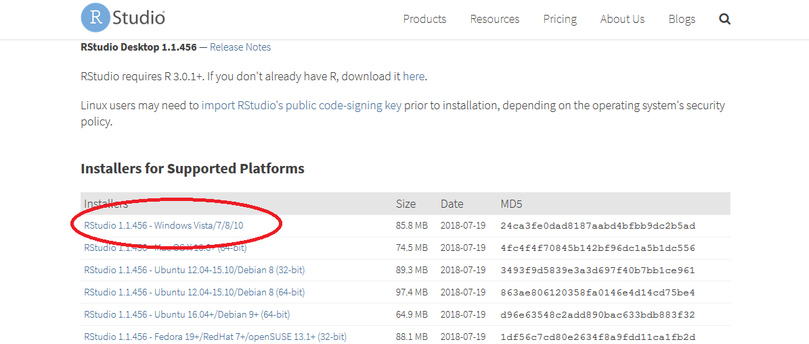 - Abrir el instalador y aceptar los permisos de administrador.
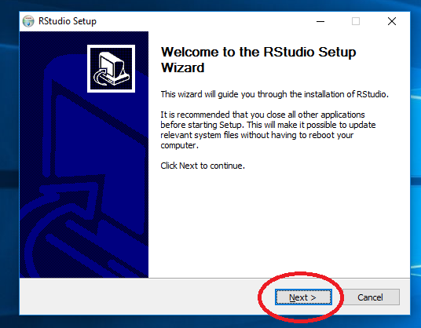 - Seleccionar la ubicación donde se desea instalar RStudio. Recomiendo mantener la opción por defecto.
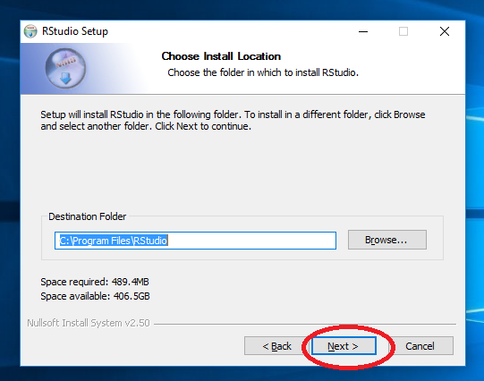 - Seleccionar la carpeta donde deseamos encontrar RStudio en el menú inicio. Recomiendo mantener la opción por defecto.
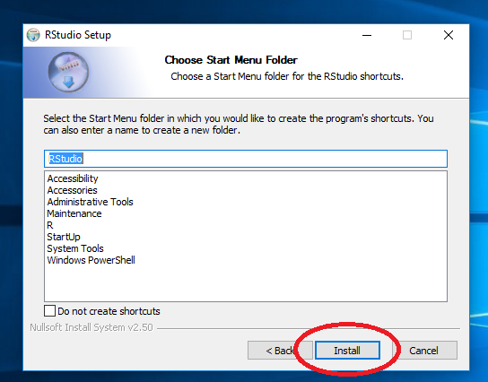 - Esperar a que la instalación termine.
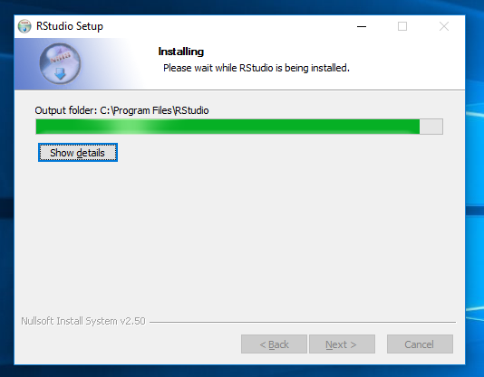 - ¡Listo! RStudio ya está instalado.
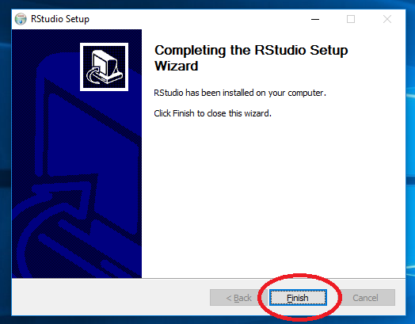
Ejecutar RStudio
Instrucciones para Windows
- Ejecutar desde el menú Inicio.
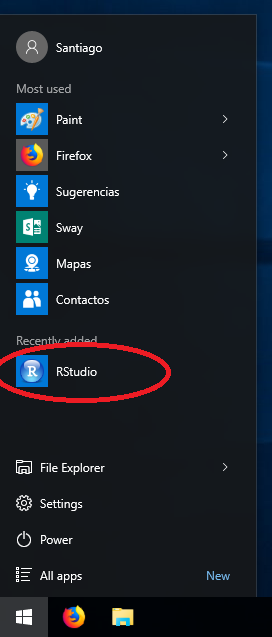 - ¡Ya está todo listo para empezar a usar R!
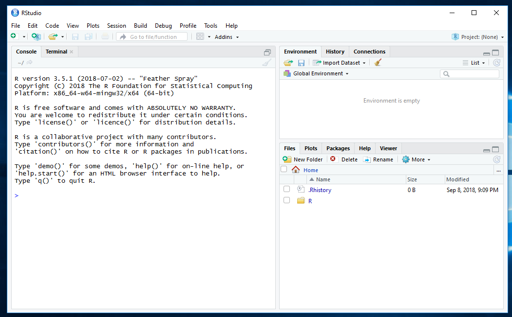
Licencia
Este trabajo es de distribución gratuita, y se encuentra licenciado bajo Creative Commons Atribución-NoComercial-SinDerivadas 4.0 Internacional (CC BY-NC-ND 4.0).